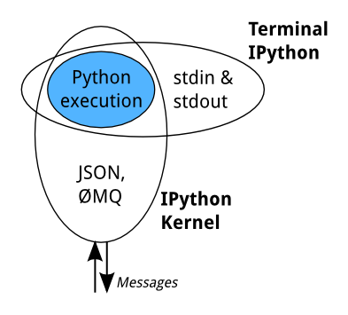

Warning
This documentation covers a development version of IPython. The development version may differ significantly from the latest stable release.
Important
This documentation covers IPython versions 6.0 and higher. Beginning with version 6.0, IPython stopped supporting compatibility with Python versions lower than 3.3 including all versions of Python 2.7.
If you are looking for an IPython version compatible with Python 2.7, please use the IPython 5.x LTS release and refer to its documentation (LTS is the long term support release).
How IPython works¶
Terminal IPython¶
When you type ipython, you get the original IPython interface, running in
the terminal. It does something like this:
while True:
code = input(">>> ")
exec(code)
Of course, it’s much more complex, because it has to deal with multi-line
code, tab completion using readline, magic commands, and so on. But the
model is like that: prompt the user for some code, and when they’ve entered it,
exec it in the same process. This model is often called a REPL, or
Read-Eval-Print-Loop.
The IPython Kernel¶
All the other interfaces—the Notebook, the Qt console, ipython console in
the terminal, and third party interfaces—use the IPython Kernel. This is a
separate process which is responsible for running user code, and things like
computing possible completions. Frontends communicate with it using JSON
messages sent over ZeroMQ sockets; the protocol they use is described in
Messaging in Jupyter.
The core execution machinery for the kernel is shared with terminal IPython:
A kernel process can be connected to more than one frontend simultaneously. In this case, the different frontends will have access to the same variables.
This design was intended to allow easy development of different frontends based on the same kernel, but it also made it possible to support new languages in the same frontends, by developing kernels in those languages, and we are refining IPython to make that more practical.
Today, there are two ways to develop a kernel for another language. Wrapper kernels reuse the communications machinery from IPython, and implement only the core execution part. Native kernels implement execution and communications in the target language:

Wrapper kernels are easier to write quickly for languages that have good Python wrappers, like octave_kernel, or languages where it’s impractical to implement the communications machinery, like bash_kernel. Native kernels are likely to be better maintained by the community using them, like IJulia or IHaskell.